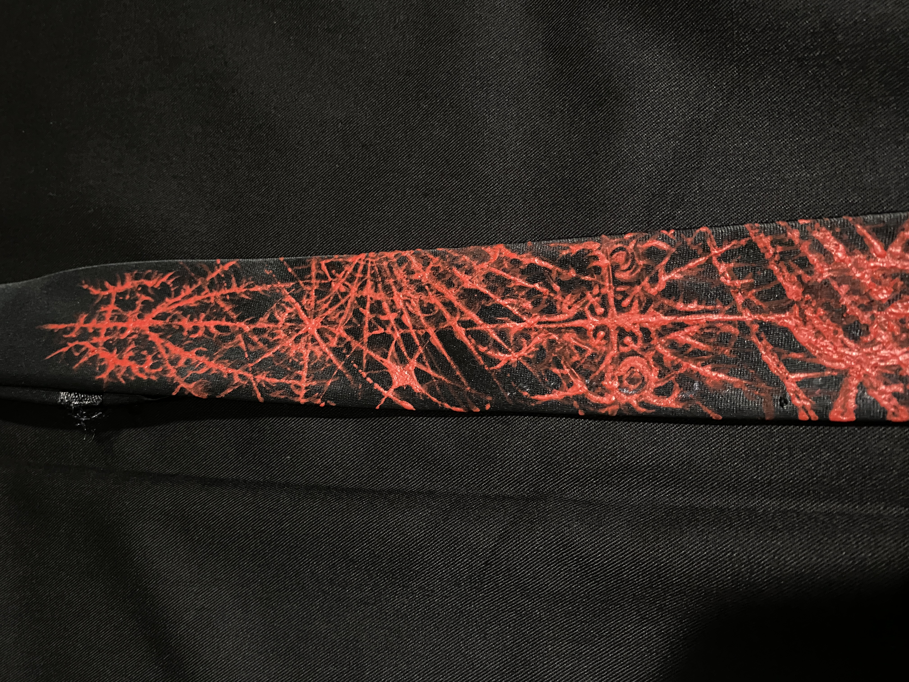
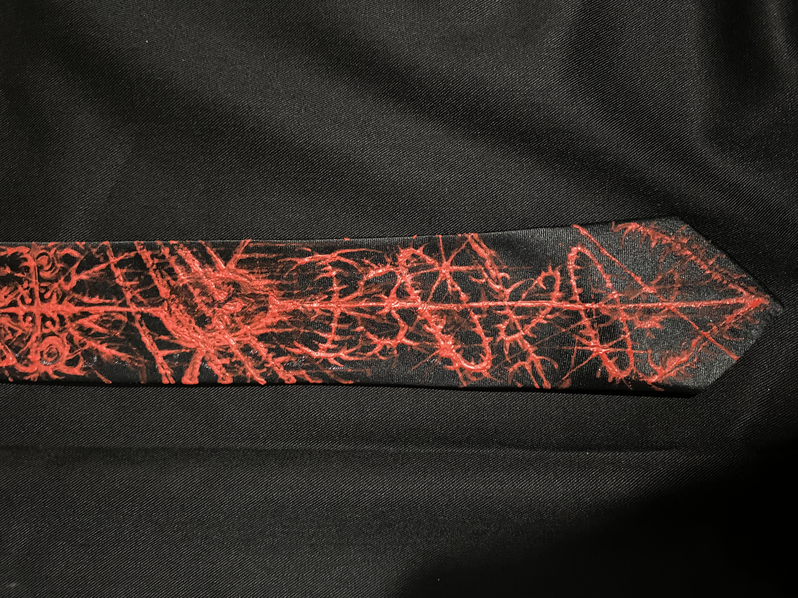

black tie
This design merges sigilism and skull imagery, using red sigil elements to represent blood, courage, and vitality. Through these symbols, I wanted to create a piece that reflects strength, transformation, and the beauty that can emerge from confronting mortality.
shoutout @_ryuzi__
Back to Collection